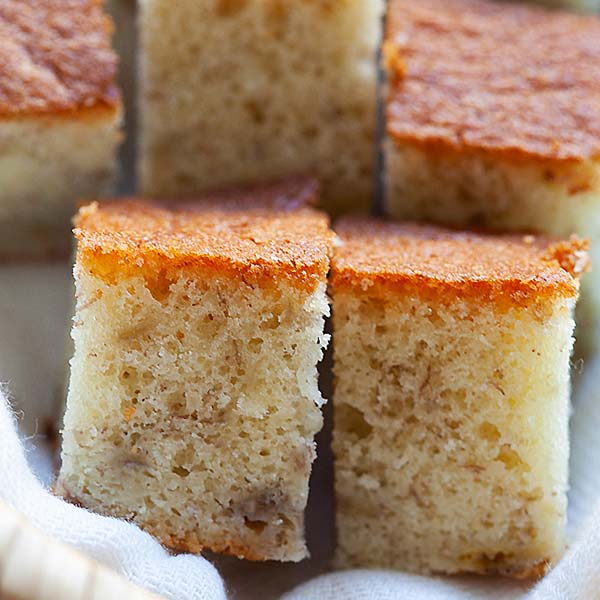

This is the best and moist banana cake from scratch. Easy banana cake recipe with six (6) ingredients.
Fail-proof, light,
fluffy and you can make at home!

Ingredients
200 g (7 oz.) overripe bananas
120 g (4.2 oz.) self-raising flour, cake flour or all-purpose flour
3/4 - 1 teaspoon baking powder
3 large eggs, room temperature
100 g (3.5 oz.) powdered sugar
1 stick (100g or 3.5 oz.) unsalted butter, melted (I used Challenge brand butter)
Instructions
Preheat oven to 375°F (190°C). Grease a square cake pan (8" x 8" or 9" x 9") OR a regular loaf pan OR two
mini loaf pans with butter. Line the pan(s) with parchment paper.
Mash the overripe bananas in a bowl until fine, set aside.
Sift the self raising flour and baking powder. Set aside.
Add the eggs into the bowl of a stand mixer. Beat on medium speed (speed 5) for 1 minute and then increase
to the highest speed (speed 10) for 2 minutes. The egg should become bubbly and foamy. Add the sugar and
beat on the highest speed for 3 minutes. The egg and sugar mixture should be foamy, as pictured below.
Add the mashed bananas into the egg mixture. Gently stir 2-3 times with a spatula to combine well.
Heat the butter in a microwave for 20-30 seconds or until it melts. Divide flour into 3 parts. Add half of
the butter into the egg mixture, gently fold and stir 2-3 times with a spatula. Next add 1/3 of the flour,
gently fold and stir around a few times until just incorporated. Add in the second part of the flour, stir
gently to incorporate. Add the remaining butter, gently stir to mix and finally add the remaining flour.
Make sure the flour is fully dissolve. DO NOT OVER MIX. Please make sure the batter retains the air bubbles
in the beaten eggs.
Pour the banana cake batter into the pan. For the best results, place the pan on another empty pan before
baking. To avoid the top of the cake from becoming too brown, cover the top of the pan with aluminum foil
after the cake is set at the top, about 20-25 minutes into baking.
Bake the banana for 40-50 minutes, or until a cake tester comes out clean in the center. Remove the cake
from the oven, let cool on a wire rack for 10 minutes before cutting into pieces.